화공기사(구) (2017-03-05 기출문제)
1과목: 화공열역학
1. 액체상태의 물이 얼음 및 수증기와 평형을 이루고 있다. 이계의 자유도수를 구하면
- 0
- 1
- 2
- 3
(정답률: 79%)

2. 25℃에서 1물의 이상기체를 실린더 속에 넣고 피스톤에 100bar의 압력을 가하였다. 이 때 피스톤의 압력을 처음에는 70bar, 다음엔 30bar, 마지막으로 10bar로 줄여서 실린더 속의 기체를 3단계 팽창시켰다. 이 과정이 등온 가역팽창인 경우 일의 크기는 얼마인가?
- 712cal
- 826cal
- 947cal
- 1364cal
(정답률: 74%)
3. 기체가 초기상태에서 최종상태로 단열팽창을 할 경우 비가역과정에 의해 행한일(Wirr)과 가역과정에 의해 행한 일(Wrev)의 크기를 옳게 비교한 것은?
- |Wirr| ＞ |Wrev
- |Wirr|＜ |Wrev
- |Wirr| = |Wrev
- |Wirr| ≥ |Wrev
(정답률: 59%)
4. 다음 중 주울-톰슨(Joule-Thomson) 팽창에 적합한 조건을 나타내는 것은?
- W=0, Q=0, H2-H1=0
- W≠0, Q=0, H2-H1≠0
- W=0, Q≠0, H2-H1≠0
- W≠0, Q≠0, H2-H1≠0
(정답률: 73%)
5. 공기표준 오토 사이클(Otto cycle)에 해당하는 선도는?
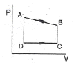
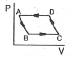
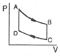
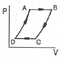
(정답률: 82%)
6. 벤젠과 톨루엔으로 이루어진 용액이 기상과 액상으로 평형을 이루고 있을 때 이 계에 대한 자유도수는?
- 0
- 1
- 2
- 3
(정답률: 79%)
7. 다음은 이상용액의 혼합특성을 나타내는 열역학적 함수이다. 옳지 않은 것은? (단, G, V, U, S, T는 각각 깁스(Gibbs) 자유에너지, 부피, 내부에너지, 엔트로피, 온도이며, R은 기체상수, Xi는 몰분율, 첨자 id는 이상용액 물성을 의미한다.)
- ∆Gid/RT = ∑XilnXi
- ∆Vid = 0
- ∆Uid = 0
- ∆Sid/R = 0
(정답률: 68%)
8. 압력과 온도변화에 따른 엔탈피 변화가 다음과 같은 식으로 표시될 때 □에 해당하는 것은?
- V

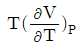

(정답률: 62%)
9. 반데르 발스 방정식
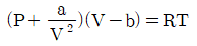
에서 P 는 atm, V 는 L/mol 단위로 하면, 상수 a 의 단위는?- L2ㆍatm/mol2
- atmㆍmol2/L2
- atmㆍmol/L2
- atm/L2
(정답률: 71%)
10. 어떤 과학자가 자기가 만든 열기관이 80℃ 와 10℃ 사이에서 작동하면서 100cal의 열을 받아 20cal 의 유용한 일을 할 수 있다고 주장한다. 이 과학자의 주장에 대한 판단으로 옳은 것은?
- 열역학 제0법칙에 위배된다.
- 열역학 제1법칙에 위배된다.
- 열역학 제2법칙에 위배된다.
- 타당하다.
(정답률: 69%)
11. 25℃에서 1몰의 이상기체가 20atm에서 1atm 로 단열 가역적으로 팽창하였을 때 최종온도는 약 몇 K 인가? (단, 비열비
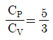
이다.)- 100K
- 90K
- 80K
- 70K
(정답률: 77%)
12. 다음 그림은 역 카르노사이클이다. 이 사이클의 성능계수는 어떻게 표시되는가? (단, T1 에서 열이 방출되고 T2 에서 열이 흡수된다.)
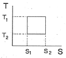
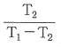
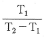
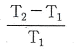
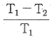
(정답률: 56%)
13. 어떤 화학반응에서 평형상수의 온도에 대한 미분계수는
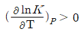
으로 표시된다. 이 반응에 대한 설명으로 옳은 것은?- 이 반응은 흡열반응이며 온도상승에 따라 K값은 커진다.
- 이 반응은 흡열반응이며 온도상승에 따라 K값은 작아진다.
- 이 반응은 발열반응이며 온도상승에 따라 K값은 커진다.
- 이 반응은 발열반응이며 온도상승에 따라 K값은 작아진다.
(정답률: 77%)
14. 다음 중 상태변수(State variables)가 될 수 없는 것은?
- 비부피(specific volume)
- 굴절율(refractive index)
- 질량(mass)
- 몰당 내부에너지(molar internal energy)
(정답률: 63%)
15. 비가역 과정에 있어서 다음 식 중 옳은 것은? (단, S 는 엔트로피, Q 는 열량, T 는 절대온도이다.)
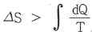
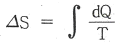
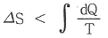
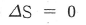
(정답률: 71%)
16. 이상기체의 거동을 따르는 산소와 질소를 0.21 대 0.79의 몰(mol)비로 혼합할 때에 혼합엔트로피 값은?
- 0.4434kcal/kmolㆍK
- 1.021kcal/kmolㆍK
- 0.161kcal/kmolㆍK
- 0.00kcal/kmolㆍK
(정답률: 52%)
17. 초기에 메탄, 물, 이산화탄소, 수소가 각각 1몰씩 존재하고 다음과 같은 반응이 이루어질 경우 물의 몰분율을 반응좌표 ε로 옳게 나타낸 것은?
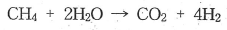
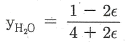
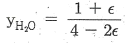
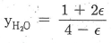
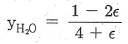
(정답률: 71%)
18. 다음 내연기관 사이클(cycle) 중 같은 조건에서 그 열역학적 효율이 가장 큰 것은?
- 카르노 사이클(Carnot cycle)
- 오토 사이클(Otto cycle)
- 디젤 사이클(Diesel cycle)
- 사바테 사이클(Sabathe cycle)
(정답률: 77%)
19. 다음 중 공기표준 오토 사이클에 대한 설명으로 옳은 것은?
- 2개의 단열과정과 2개의 정적과정으로 이루어진 불꽃점화 기관의 이상사이클이다.
- 정압, 정적, 단열 과정으로 이루어진 압축점화기관의 이상사이클이다.
- 2개의 단열과정과 2개의 정압과정으로 이루어진 가스 터빈의 이상사이클이다.
- 2개의 정압과정과 2개의 정적과정으로 이루어진 증기원동기 의 이상사이클이다.
(정답률: 71%)
20. 이상기체와 반데르발스(van der Waals)상태방정식을 만족시키는 각 기체에 대해 일정한 온도에서 내부에너지의 부피에 대한 변화율 즉,
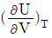
를 나타낸 올바른 식은? (단, 반데르발스(van der Waals)상태방정식은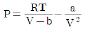
이다.)- RT/(V-b)
- a/V2
- a/V
- RT/(V-b)2
(정답률: 75%)
2과목: 단위조작 및 화학공업양론
21. 몰 조성이 79% N2 및 21% O2인 공기가 있다. 20℃, 740mmHg에서 이 공기의 밀도는 약 몇 g/L인가?
- 1.17
- 1.34
- 3.21
- 6.45
(정답률: 68%)
22. 동력의 단위환산 값 중 1kW와 가장 거리가 먼 것은?
- 10.97kgfㆍm/s
- 0.239kcal/s
- 0.948BTU/s
- 1000000mW
(정답률: 48%)
23. 30℃, 1atm의 공기 중의 수증기 분압이 21.9mmHg일 때 건조공기 당 수증기 질량[kg(H2O/kg(dry air)]은 얼마인가? (단, 건조 공기의 분자량은 29이다.)
- 0.0272
- 0.0184
- 0.272
- 0.184
(정답률: 60%)
24. 25wt%의 알코올 수용액 20g을 증류하여 95wt%의 알코올 용액 x g과 5wt%의 알코올 수용액 y g으로 분리한다면 x와 y는 각각 얼마인가?
- x=4.44, y=15.56
- x=15.56, y=4.44
- x=6.56, y=13.44
- x=13.44, y=6.56
(정답률: 69%)
25. 과열수증기가 190℃(과열), 10bar에서 매시간 2000kg/h로 터빈에 공급되고 있다. 증기는 1bar 포화증기로 배출되며 터빈은 이상적으로 가동된다. 수증기의 엔탈피가 다음과 같다고 할 때 터빈의 출력은 몇 kW인가?
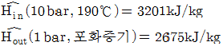
- W=-1200kW
- W=-292kW
- W=-130kW
- W=-30kW
(정답률: 58%)
26. 지하 220m 깊이에서부터 지하수를 양수하여 20m 높이에 가설된 물탱크에 15kg/s의 양으로 물을 올리고 있다. 이 때 위치 에너지(potential energy)의 증가분(△Ep)은 얼마인가?(오류 신고가 접수된 문제입니다. 반드시 정답과 해설을 확인하시기 바랍니다.)
- 35280J/s
- 3600J/s
- 3250J/s
- 2⑤J/s
(정답률: 66%)
27. 1mol% 에탄올 함유한 기체가 20℃, 20atm에서 물과 접촉할 때 용해된 에탄의 몰분율은? (단, 탄수화물은 비교적 물에 녹지 않으며 에탄의 헨리상수는 2.63×104atm/몰분율이다.)
- 7.6×10-6
- 6.3×10-5
- 5.4×10-5
- 4.6×10-6
(정답률: 55%)
28. 공기의 O2와 N2의 몰%는 각각 21.0과 79.0이다. 산소와 질소의 질량비(O2/N2)는 약 얼마인가?
- 0.102
- 0.203
- 0.303
- 0.401
(정답률: 69%)
29. 100℃, 765mmHg에서 기체 혼합물의 분석값이 CO2 8vol%, O2 12vol%, N2 80vol%이엇다. 이 때 CO2분압은 약 몇 mmHg 인가?
- 14.1
- 31.1
- 61.2
- 107.5
(정답률: 70%)
30. C2H4 40kg을 연소기키기 위해 800kg의 공기를 공급하였다. 과잉공기 백분율은 약 몇 %인가?
- 45.2
- 35.2
- 25.2
- 12.2
(정답률: 33%)
31. 추제(solvent)의 선택요인으로 옳은 것은?
- 선택도가 작다.
- 회수가 용이하다.
- 값이 비싸다.
- 화학결합력이 크다.
(정답률: 71%)
32. Prandtl수가 1보다 클 경우 다음 중 옳은 것은?
- 운동량 경계층이 열 경계층보다 더 두껍다.
- 운동량 경계층이 열 경계층보다 더 얇다.
- 운동량 경계층과 열 경계층의 두계가 같다.
- 운동량 경계층과 열 경계층의 두께와는 관계가 없다.
(정답률: 64%)
33. 운동량 유속(Momentum flux)에 대한 표현으로 옳지 않은 것은?
- 질량 유속(Mass flux)과 선속도의 곱이다.
- 밀도와 질량 유속(Mass flux)과의 곱이다.
- 밀도와 선속도 자승의 곱이다.
- 질량 유량(Mass flow rate)과 선속도의 곱을 단면적으로 나눈 것이다.
(정답률: 40%)
34. 막 분리 공정 중 역삼투법에서 물과 염류의 수송 메카니즘에 대한 설명으로 가장 거리가 먼 내용은?
- 물과 용질은 용액 확산 메카니즘에 의해 별도로 막을 통해 확산된다.
- 치밀층의 저압쪽에서 1atm일 때 순수가 생성된다면 활동도는 사실상 1이다.
- 물의 훌럭스 및 선택도는 압력차에 의존하지 않으나 염류의 훌럭스는 압력차에 따라 크게 증가하다.
- 물 수송의 구동력은 활동도 차이이며, 이는 압력차에서 공급물과 생성물의 삼투압 차이를 뺀 값에 비례한다.
(정답률: 50%)
35. 정류 조작에서 최소 환류비에 대한 올바른 표현은?
- 이론 단수가 무한대 일 때의 환류비이다.
- 이론 단수가 최소 일 때의 환류비이다.
- 탑상 유출물이 제일 적을 때의 환류비이다.
- 탑저 유출물이 제일 적을 때의 환류비이다.
(정답률: 57%)
36. 내경 10cm관을 통해 층류로 물이 흐르고 있다. 관의 중심유속이 2cm/s일 경우 관벽에서 2cm떨어진 곳의 유속은 약 몇 cm/s인가?
- 0.42
- 0.86
- 1.28
- 1.68
(정답률: 47%)
37. 흡수탑에서 전달단위수(NTU)는 20 이고 전달단위높이(HTU)가 0.7m일 경우, 필요한 충전물의 높이는 몇 m 인가?
- 1.4
- 14
- 2.8
- 28
(정답률: 65%)
38. 펄프로 종이의 연속 시트(sheet)를 만들 경우 다음 중 가장 적당한 건조기는?
- 터널건조기(Tunnel dryer)
- 회전건조기(Rotary dryer)
- 상자건조기(Tray dryer)
- 원통형건조기(Cylinder dryer)
(정답률: 53%)
39. 면적이 0.25m2인 250℃상태의 물체가 있다. 50℃공기가 그 위에 있을 때 전열속도는 약 몇 kW인가? (단, 대류에 의한 열전달계수는 30W/m2ㆍ℃이다.)
- 1.5
- 1.875
- 1500
- 1875
(정답률: 49%)
40. 원관내 25℃의 물을 65℃까지 가열하기 위해서 100℃의 포화수증기를 관 외부로 도입하여 그 응축열을 이용하고 100℃의 응축수가 나오도록 하였다. 이 때 대수평균 온도차는 몇 ℃인가?
- 0.56
- 0.85
- 52.5
- 55.5
(정답률: 60%)
3과목: 공정제어
41. 제어계의 피제어 변수의 목표치를 나타내는 말은?
- 부하(load)
- 골(goal)
- 설정치(set point)
- 오차(error)
(정답률: 71%)
42. 제어기를 설계할 때에 대한 설명으로 옳지 않은 것은?
- 일반적으로 제어기의 강인성(robustness)과 성능(performance)을 동시에 고려하여야 한다.
- 제어기의 튜닝은 잔류오차(offset)가 없고 부드럽고 빠르게 설정값에 접근하도록 이루어져야 한다.
- 설정값 변화 공정에 최적인 튜닝값은 외란 변화 공정에도 최적이다.
- 공정이 가진 시간지연이 길어지면 제어루프가 가질 수 있는 최대 성능은 나빠진다.
(정답률: 63%)
43. 다음 그림의 액체저장 탱크에 대한 선형화된 모델식으로 옳은 것은? (단, 유출량 q(m3/min)는 2√h로 나타내어지며, 액위 h의 정상상태 값은 4m이고 단면적은 Am2이다.)
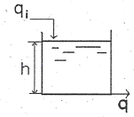
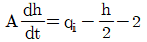
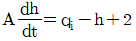
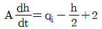
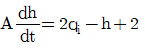
(정답률: 43%)
44. 다음 블록선도에서 전달함수Y(s)/X(s)는?
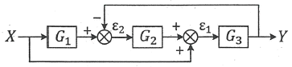
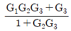
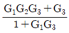
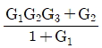
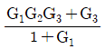
(정답률: 70%)
45. 전달함수가 다음과 같이 주어진 계가 역응답(inverse response)을 갖기 위한 r값은?
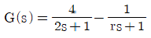
- r＜2
- r＞2
- r＞(1/2)
- r＜(1/2)
(정답률: 42%)
46. 전달함수가 G(s)=Kexp(-θs)/(rs+1)인 공정에 공정입력 u(t)=sin(√2t)을 적용했을 때, 시간이 많이 흐른 후 공정출력 y(t)=(2/√2)sin(√2t-π/2)이었다. 또한, u(t)=1을 적용하였을 때 시간이 많이 흐른 후 y(t)=2이었다. K,θ,r 값은 얼마인가?
- K=1, r=1/√2, θ=π/2√2
- K=1, r=1/√2, θ=π/4√2
- K=2, r=1/√2, θ=π/4√2
- K=2, r=1/√2, θ=π/2√2
(정답률: 35%)
47. 전달함수 y(s)=(1+2s)e(s)+(1.5/s)e(s)에 해당하는 시간영역에서의 표현으로 옳은 것은?
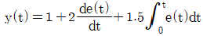
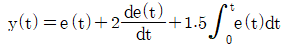
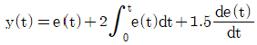
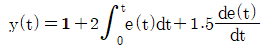
(정답률: 53%)
48. 전달함수
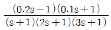
에 대해 잘못 설명한 것은?- 극점(pole)은 -1, -0.5, -1/3이다.
- 영점(zero)은 1/0.2, -1/0.1이다.
- 전달함수는 안정하다.
- 전달함수가 안정하기 때문에 전달함수의 역함수도 안정하다.
(정답률: 68%)
49. 다음의 식이 나타내는 이론은 무엇인가?
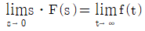
- 스토크스의 정리(Stokes Theorem)
- 최종값 정리(Final Theorem)
- 지그러-니콜스의 정리(Ziegle-Nichols Theorem)
- 테일러의 정리(Taylers Theorem)
(정답률: 74%)
50. PID제어기에서 미분동작에 대한 설명으로 옳은 것은?
- 제어에러의 변화율에 반비례하여 동작을 내보낸다.
- 미분동작이 너무 작으면 측정잡음에 민감하게 된다.
- 오프셋을 제거해 준다.
- 느린 동특성을 가지고 잡음이 적은 공정의 제어에 적합하다.
(정답률: 45%)
51.
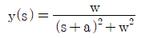
의 Laplace역변환은?- y(t)=exp(-at)sin(wt)
- y(t)= sin(wt)
- y(t)=exp(at)cos(wt)
- y(t)=exp(at)
(정답률: 68%)
52. 과소감쇠 2차계(underdamped system)의 경우 decay ratio는 overshoot를 a라 할 때 어떤 관계가 있는가?
- a이다.
- a2이다.
- a3이다.
- a4이다.
(정답률: 67%)
53. 전달함수와 원하는 closed-loop응답이 각각
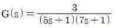
,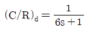
일 때 얻어지는 제어기의 유형과 해당되는 제어기의 파라미터를 옳게 나타낸 것은?- P제어기, Kc=1/3
- PD제어기, Kc=2/3, τD=35/6
- PI제어기, Kc=1/3, τI=12
- PID제어기, Kc=2/3, τI=12, τD=35/12
(정답률: 43%)
54. 다음 시스템이 안정하기 위한 조건은?
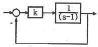
- 0＜k＜1
- k＞1
- k＜1
- k＞0
(정답률: 51%)
55. 개회로 전달함수(open-loop transfer function) 그림참고m1인 계(系)에 있어서 Kc가 4.41인 경우 폐회로의 특정방정식은?
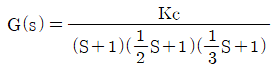
- S3+7S2+14S+76.5=0
- S3+5S2+12S+4.4=0
- S3+4S2+10S+10.4=0
- S3+6S2+11S+32.5=0
(정답률: 65%)
56. 어떤 제어계의 총괄전달함수의 분모가 다음과 같이 나타날 때 그 계가 안정하게 유지되려면 K의 최대범위(upper bound)는 다음 중에서 어느 것이 되어야 하는가?
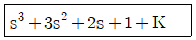
- K＜5
- K＜1
- K＜(1/2)
- K＜(1/3)
(정답률: 62%)
57. 다음 공정과 제어기를 고려할 때 정상상태(steady-state)에서
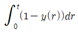
값은 얼마인가?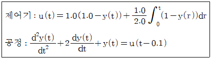
- 1
- 2
- 3
- 4
(정답률: 35%)
58. Unstable 공정은 비례제어기로 먼저 안정화 시키는 것이 운전에 중요하다. 공정 을 안정화시키는 비례이득 값의 아래 한계는(lower bound)는?
- 0.5
- 1
- 2
- 5
(정답률: 39%)
59. servo problem에 대한 설명으로 가장 적절한 것은?
- Set point value가 변하지 않는 경우이다.
- Load value가 변하는 경우이다.
- Set point value는 변하고 load value는 변하지 않는 경우이다.
- Feedback이 없는 경우이다.
(정답률: 55%)
60. 설정치(Set point)는 일정하게 유지되고, 외부교란변수(disturbance)가 시간에 따라 볁화할 때 피제어변수가 설정치를 따르도록 조절변수를 제어하는 것은?
- 조정(Regulatory)제어
- 서보(Servo)제어
- 감시제어
- 예측제어
(정답률: 60%)
4과목: 공업화학
61. 다음 중 암모니아소다법의 핵심공정 반응식을 옳게 나타낸 것은?
- 2NaCi + H2SO4 → Na2SO4 + 2HCI
- 2NaCI + SO2 + H2O + (1/2)O2 → Na2SO4 + 2HCI
- NaCI + 2NH3 + CO2 → NaCO2NH2 + NH4CI
- NaCI + NH3 + CO2 + H2O → NaHCO3 + NH4CI
(정답률: 59%)
62. 다음 중 수용성 인산 비료는?
- Thomas 인비
- 중과린산석회
- 용성인비
- 소성인산 3석회
(정답률: 50%)
63. 질산과 황산의 혼사에 글리세린을 반응시켜 만드는 물질로 비중이 약 1.6이고 다이너마이트를 제조할 때 사용되는 것은?
- 글리세릴 디니트레이트
- 글리세릴 모노니트레이트
- 트리니트로톨루엔
- 니트로글리세린
(정답률: 58%)
64. 윤활유의 성상에 대한 설명으로 가장 거리가 먼 것은?
- 유막강도가 커야 한다.
- 적당한 점도가 있어야 한다.
- 안정도가 커야 한다.
- 인화점이 낮아야 한다.
(정답률: 69%)
65. 논농사보다는 밭농사를 주로 하는 지역에서 사용하는 흡습성이 강한 비료로서 Fauser법으로 생산하는 것은?
- NH4CI
- NH4NO3
- NH2CONH2
- (NH4)2SO4
(정답률: 42%)
66. 지하수 내에 Ca2+ 40mg/L, Mg2+ 24.3mg/L가 포함되어있다. 지하수의 경도를 mg/L CaCO3로 옳게 나타낸 것은? (단, 원자량은 Ca 40, Mg 24.3 이다.)
- 32.15
- 64.3
- 100
- 200
(정답률: 30%)
67. 아세틸렌을 원료로 하여 합성되는 물질이 아닌 것은?
- 아세트알데히드
- 염화비닐
- 포름알데히드
- 아세트산 비닐
(정답률: 58%)
68. 200kg의 인산(H3PO4)제조 시 필요한 인광석의 양은 약 몇 kg 인가? (단, 인광석 내에는 30%의 P2O5의 분자량은 142이다.)
- 241.5
- 362.3
- 483.1
- 603.8
(정답률: 53%)
69. 디젤연료의 성능을 표시하는 하나의 척도는?
- 옥탄가
- 유동점
- 세탄가
- 아닐린점
(정답률: 57%)
70. 반도체 제조공정 중 원하는 형태로 패턴이 형성된 표면에서 원하는 부분을 화학반응 또는 물리적 과정을 통해 제거하는 공정은?
- 리소그래피
- 에칭
- 세정
- 이온주입공정
(정답률: 74%)
71. 융점이 327℃이며, 이 온도 이하에서는 용매가공이 불가능할 정도로 매우 우수한 내약품성을 지니고 있어 화학공정기계의 부식방지용 내식재료로 많이 응용되고 있는 고분자 재료는 무엇인가?
- 폴리에틸렌
- 폴리테트라 플로로에틸렌
- 폴리카보네이트
- 폴리이미드
(정답률: 43%)
72. 질산의 직접 합성 반응이 다음과 같을 때 반응 후 응축하여 생성된 질산 용액의 농도는 얼마 인가?
- 68wt%
- 78wt%
- 88wt%
- 98wt%
(정답률: 64%)
73. 아닐린에 대한 설명으로 옳은 것은?
- 무색ㆍ무취의 액체이다.
- 니트로벤젠은 아닐린으로 산화될 수 있다.
- 비점이 약 184℃이다.
- 알코올과 에테르에 녹지 않는다.
(정답률: 52%)
74. 생성된 입상 중합체를 직접 사용하여 연속적으로 교반하여 중합하며, 중합열의 제어가 용이하지만 안정제에 의한 오염이 발생하므로 세척, 건조가 필요한 중합법은?
- 괴상중합
- 용액중합
- 현탁중합
- 축중합
(정답률: 57%)
75. 다음의 과정에서 얻어지는 물질로 ( )안에 알맞은 것은?
- 에탄올
- 에텐디올
- 에틸렌글리콜
- 아세트알데히드
(정답률: 53%)
76. 접촉식에 의한 황산의 제조 공정에서 이산화황이 산화되어 삼산화황으로 전환하여 평형상태에 도달한다. 삼산화황 1몰을 생산하기 위해서 필요한 공기 최소량은 표준상태를 기준으로 약 몇 L인가? (단, 이상적인 반응을 가정한다.)
- 53L
- 40.3L
- 20.16L
- 10.26L
(정답률: 45%)
77. Friedel-Crafts 반응에 쓰이는 대표적인 촉매는?
- Al2O3
- H2SO4
- P2O5
- AlCl3
(정답률: 60%)
78. 부식전류가 크게 되는 원인으로 가장 거리가 먼 것은?
- 용존 산소농도가 낮을 때
- 온도가 높을 때
- 금속이 전도성이 큰 전해액과 접촉하고 있을 때
- 금속표면의 내부응력의 차가 클 때
(정답률: 65%)
79. 고분자의 수평균분자량을 측정하는 방법으로 가장 거리가 먼 것은?
- 광산란법
- 삼투압법
- 비등점상승법
- 빙점강하법
(정답률: 50%)
80. 가성소다 제조에 있어 격막법과 수은법에 대한 설명 중 틀린 것은?
- 전류밀도는 수은법이 격막법의 약5~6배가 된다.
- 가성소다 제품의 품질은 수은법이 좋고 격막법은 약1~1.5% 정도의 NaCL을 함유한다.
- 격막법은 양극실과 음극실 액의 pH가 다르다.
- 수은법은 고동도를 만들기 위해서 많은 증기가 필요하기 때문에 보일러용 연료가 필요하므로 대기오염의 문제가 없다.
(정답률: 65%)
5과목: 반응공학
81. 크기가 다른 3개의 혼합흐름반응기(mixed flow reactor)를 사용하여 2차 반응에 의해서 제품을 생산하려 한다. 최대의 생산율을 얻기 위한 반응기의 설치 순서로서 옳은 것은? (단, 반응기의 부피 크기는 A＞B＞C이다.)
- A→B→C
- B→A→C
- C→B→A
- 순서에 무관
(정답률: 58%)
82. 2A+B→2C 반응이 회분반응기에서 정압등온으로 진행된다. A,B가 양론비로 도입되며 불활성물이 없고 임의시간 전화율이 XA일 때 초기 전몰 수 Nto에 대한 전몰수 Nt의 비(Nt/Nto)를 옳게 나타낸 것은?
- 1-(XA/3)
- 1+(XA/4)
- 1-(X2A/3)
- 1+(X2A/4)
(정답률: 46%)
83. 균일 2차 액상반응(A→R)이 혼합반응기에서 진행되어 50%의 전환을 얻었다. 다른 조건은 그대로 두고, 반응기만 같은 크기의 플러그흐름 반응기로 대체시켰을 때 전환율은 어떻게 되겠는가?
- 47%
- 57%
- 67%
- 77%
(정답률: 61%)
84. 의 식에서 순환비 R을 0으로 하면 어떤 반응기에 적용되는 식이 되는가? (단, V:반응기부피, FAO:반응물유입몰속도, XA:전화율, -rA:반응속도)
- 회분식 반응기
- 플러그 흐름 반응기
- 혼합 흐름 반응기
- 다중 효능 반응기
(정답률: 54%)
85. 다음 반응에서 CA0=1moI/L, CR0=CS0=0이고 속도상수 k1=k2=0.1min-1이며 100L/h의 원료유입에서 R을 얻는다고 한다. 이 때 성분 R의 수득률을 최대로 할 수 있는 플러그 흐름 반응기의 크기를 구하면?
- 16.67L
- 26.67L
- 36.67L
- 46.67L
(정답률: 36%)
86. 화학평형에서 열역학에 의한 평형상수에 다음 중 가장 큰 영향을 미치는 것은?
- 계의 온도
- 불활성물질의 존재 여부
- 반응속도론
- 계의 압력
(정답률: 56%)
87. A→B⇄R인 복합반응의 회분조작에 대한 3성분계 조성도를 옳게 나타낸 것은?
(정답률: 63%)
88. 다음과 같은 플러그 흐름 반응기에서의 반응시간에 따른 CB(t)는 어떤 관계로 주어지는가? (단, k는 각 경로에서의 속도상수, CAO는 A의 초기농도, t는 시간이고, 초기에는 A만 존재한다.)
- k3CAOte-k1t
- k1CAOte-k2t
- k1CAOe-k3t+k2CB
- k1CAOe-k2t+k2CB
(정답률: 40%)
89. 액상 플러그 흐름 반응기의 일반적 물질수지를 나타내는 식은? (단, τ는 공간시간, CAO농도, CAf는 유출농도, -rA는 반응속도, t는 반응시간을 나타낸다.)
(정답률: 59%)
90. 물질 A는 A→5S로 반응하고 A와 S가 모두 기체일 때, 이 반응의 부피변화율 EA를 구하면? (단, 초기에는 A만 있다.)
- 1
- 1.5
- 4
- 5
(정답률: 63%)
91. 평형 전화율에 미치는 압력과 비활성 물질의 역할에 대한 설명으로 옳지 않은 것은?
- 평형상수는 반응속도론에 영향을 받지 않는다.
- 평형상수는 압력에 무관하다.
- 평형상수가 1보다 많이 크면 비가역 반응이다.
- 모든 반응에서 비활성 물질의 감소는 압력의 감소와 같다.
(정답률: 39%)
92. 어떤 반응에서 -rA=0.⑤CA mol/cm3ㆍh일 때 농도를 mol/L, 그리고 시간을 min으로 나타낼 경우 속도상수의 값은?
- 7.33×10-4
- 8.33×10-4
- 9.33×10-4
- 10.33×10-4
(정답률: 63%)
93. 반응을, 2개의 같은 크기의 혼합 흐름반응기(mixed flow reactor)를 직렬로 연결하여 반응시켰을 때, 최종 반응기 출구에서의 전화율은? (단, 이반응은 기초반응이고, 각 반응기의 kτ=2이다.)
- 0.111
- 0.333
- 0.667
- 0.889
(정답률: 42%)
94. 고체 촉매에 의한 기상 반응 A+B=R에 있어서 성분 A와 B가 같은 양이 존재할 때 성분 A의 흡착 과정이 율속인 경우의 초기 반응 속도와 전압의 관계는? (단, a,b는 정수이고, p는 전압이다.)
(정답률: 37%)
95. 균일계 액상 병렬 반응이 다음과 같을 때 R의 순간수율ø값으로 옳은 것은?
(정답률: 49%)
96. 공간시간과 평균체류 시간에 대한 설명 중 틀린 것은?
- 밀도가 일정한 반응계에서는 공간시간과 평균체류 시간은 항상 같다.
- 부피가 팽창하는 기체 반응의 경우 평균체류 시간은 공간시간보다 작다.
- 반응물의 부피가 전화율과 직선 관계로 변하는 관형반응기에서 평균체류 시간은 반응속도와 무관하다.
- 공간시간과 공간속도의 곱은 항상 1이다.
(정답률: 43%)
97. 고체촉매의 고정층 반응기를 이용한 비압축성 유체의 반응에서 다음 중 반응속도에 영향이 가장 적은 변수는?
- 반응온도
- 반응압력
- 반응물 농도
- 촉매의 활성도
(정답률: 50%)
98. 에틸아세트산의 가수분해반응은 1차 반응속도식에 따른다고 한다. 만일 어떤 실험조건하에서 정확히 20% 분해시키는데 50분이 소요되었다면, 반감기는 몇 분이 걸리겠는가?
- 145
- 155
- 165
- 175
(정답률: 65%)
99. 액상 1차 반응 A→R+S가 혼합흐름 반응기와 플러그 흐름 반응기가 직렬로 연결된 곳에서 일어난다. 다음 중 옳은 설명은? (단, 반응기의 크기는 동일하다.)
- 전화율을 크게 하기 위해서는 혼합 흐름 반응기를 앞에 배치해야 한다.
- 전화율은 크게 하기 위해서는 플러그 흐름 반응기를 앞에 배치해야 한다.
- 전화율을 크게 하기 위해, 낮은 전화율에서는 혼합 흐름반응기를, 높은 전화율에서는 플러그 흐름 반응기를 앞에 배치해야 한다.
- 반응기의 배치 순서는 전화율에 영향을 미치지 않는다.
(정답률: 47%)
100. 다음 반응에서 전환율 XA 따르는 반응 후 총 몰수를 구하면 얼마인가? (단, 반응초기에 B, C, D는 없고, nAO는 초기 A성분의 몰수, XA는 A성분의 전화율이다.)
- nAO+nAOXA
- nAO-nAOXA
- nAO+2nAOXA
- nAO-2nAOXA
(정답률: 48%)